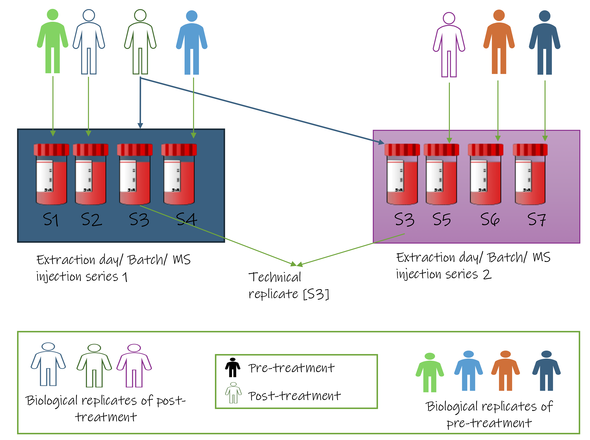
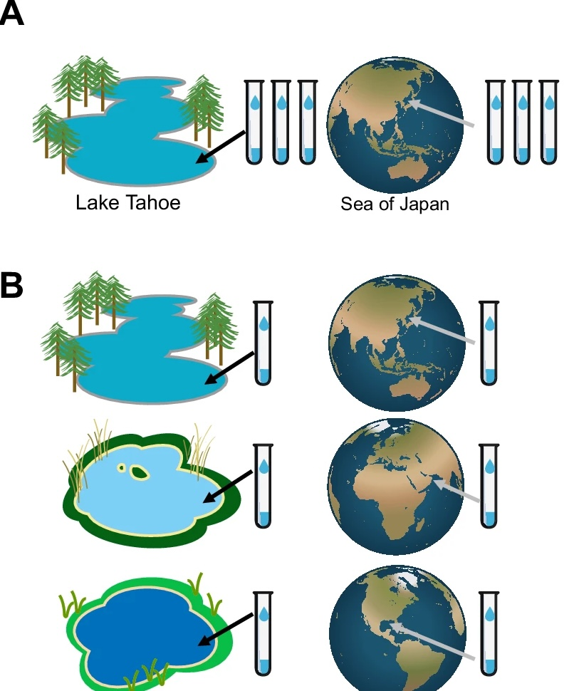

Module nm2.3
Replication: biological vs technical, and when technical replicates help
Module 1 defined the terms, biological replicates, technical replicates, and why treating non independent measurements as independent inflates n (pseudoreplication, Pitfall 8). This section takes those as given and answers one design question Module 1 did not: should you spend part of your budget on technical replicates at all?
A quick reminder of the distinction, because the rest of the section turns on it:
- A biological replicate is an independent sample from the population, a different patient, mouse, or culture. Biological replicates are what your n is counted in.
- A technical replicate is the same sample measured more than once. It tells you how consistent the measurement is, not how variable the biology is.
Only biological replicates add to n. A technical replicate measured twice is still one biological sample. So the question is never "do technical replicates increase my sample size", they don't but "are they worth the budget for what they do tell me?"
Whether to include them is a platform decision
Technical replicates are not a default requirement. The principle is simple:
When technical replication earns its place
Technical replicates are worth it when measurement noise is large enough to affect your scientific question. When measurement noise is small next to the biological differences you care about, the same budget may buy more as another biological sample.
Platforms differ enormously on this. On bulk RNA-seq, technical variance from library prep and sequencing is usually small compared with the biological differences between samples, a technical replicate spends budget measuring something that barely moves. In some mass-spectrometry applications, the situation can be different: run-to-run variation from ionisation, instrument drift, and injection can rival the biological effect, so technical replicates carry real information.
| Platform | Technical vs biological variance | When technical replication may be useful |
|---|---|---|
| Bulk RNA-seq | Technical ≪ biological | Rarely for power; useful for QC |
| Proteomics (MS) | Often comparable, especially in discovery | Often worthwhile |
| Metabolomics (MS) | Often comparable | Yes, pooled QC samples are standard practice |
| 16S / metagenomics | Extraction and PCR variation substantial | Useful for spotting contamination and technical bias |
Read the table as examples of the principle, not fixed rules: the question is always whether measurement noise is large enough to matter for what you are trying to detect.
The payoff: technical replicates can remove noise, not just measure it
There is a second reason to include technical replicates, and it is the one most people miss. When built into the design, technical replicates can do more than measure technical noise: they can help estimate and, with appropriate methods, correct for systematic technical variation.
The idea is intuitive. If you measure the same sample twice, differences between the measurements cannot be attributed to biological differences between samples; they provide information about measurement variability.

The clearest everyday version is a shared reference sample: one common sample run repeatedly through every batch. In proteomics this is a bridge channel carried through each TMT set; in metabolomics it is the pooled QC injection you met in the mass-spec walk-through. Because it is the same material every time, any variation in its measurements is drift, not biology and that variation can help identify and correct systematic differences between batches.
A method that does this: RUV-III
RUV-III ("remove unwanted variation") uses technical replicates as the reference. The same sample measured in two batches should give the same profile, so any systematic disagreement is technical noise. RUV-III learns that noise from all the replicate pairs and removes it from every sample.
Applied to a NanoString cohort where batch effects swamped the biological signal, a handful of technical replicates let RUV-III recover structure the biological samples alone could not have revealed.
The design lesson and the only part that matters here: none of this works after the fact. The replicates (or the reference sample) have to be in the run from the start. You cannot decide at analysis that you wish you had them. This is why "should I include technical replicates" is a design question, not an analysis one.
What to carry forward
- Technical replicates do not add to n only biological replicates do.
- Whether to include them depends on the platform and the question: technical replication is rarely needed for power in bulk RNA-seq, while it can be valuable for measuring and controlling technical variation in mass spectrometry.
- Included by design, technical replicates (or a shared reference sample) let you measure and remove technical drift. Left out, that option is gone it cannot be added retrospectively.
Activity: is this design replicated, or pseudoreplicated?
The study. A team wants to know whether microbial communities differ between freshwater and marine environments. Two sampling designs are proposed. Both produce six samples and cost the same to sequence.

In your group, for panel A and then panel B:
- What is the biological unit the study wants to draw a conclusion about?
- What is the real n per environment?
- Is this valid biological replication (vial as sample), or pseudoreplication?
Then: one design gives an answer to the research question and the other does not. Which, and what exactly does the failing design measure instead?
Ref: Wagner & Kleiner. Nature Communications 16, 7263 (2025). doi:10.1038/s41467-025-62616-x (CC BY-NC-ND 4.0)